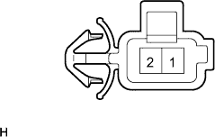

Electronic control type automatotlan spots axle [ECT] system (U340F) Transmission Control Switch system |

| Step 1 | Tascan Data Read (O/D Cut SW) |
Use SST (Tascan) to operate according to the screen display, display the [ECU data monitor] screen and check the computer data.
| Item name [Symbol] | Item explanation | Inspection condition | Reference value | Inspection items in the event of an abnormality |
|---|---|---|---|---|
| O/D cut SW [OD2] | Represent T/M Control SW | T/M Control SW Press (prohibition) → Press (permit) | OFF → ON | ODMS signal |
|
| ||||
| NG | |
| Step 2 | Transmission Control Switch Single Inspection |
Cut the connector of the transmission control switch.
|  |
Use SST (Toyota Electrical Tester) to check the conversation between terminals.
| switch | Conduction |
|---|---|
| Pushed state | There is an conductor |
| Relined state | Without conduction |
|
| ||||
| OK | |
| Step 3 | Wire harness and connector inspection (transmission control switch-engine control computer) |
Connect the connector of the transmission control switch.
 |
Separate the connector C in the engine control computer and use SST (Toyota Electrical Tester) to check the conduct between C29 (ODMS) ← → B7 (E1) terminals.(The terminal array isreference)
| switch | Conduction |
|---|---|
| Pushed state | There is an conductor |
| Relined state | Without conduction |
|
| ||||
| OK | ||
| ||